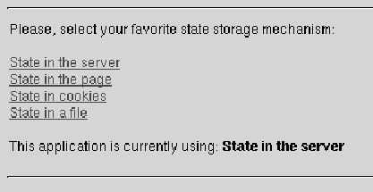
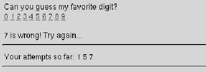

Table of Contents
Table of Contents
 Previous Section
Previous Section
Table of Contents
Previous Section
The SessionStores example application that accompanies this documentation demonstrates various ways to store state. The code excerpts used in the following sections come from the SessionStores example, so please refer to the example itself for more details about the implementation.
The SessionStores application presents the user with a choice of storage strategies:

Once an initial choice has been made, the application plays a guessing game with the user:

As you can see, the application keeps track of a user's previous guesses within a session---this, in part, is the state that must be stored from transaction to transaction.
This application switches between storage strategies through the facilities of the WOApplication and WOSessionStore classes. WOApplication declares the setSessionStore: method that lets you switch between strategies, and WOSessionStore declares the following methods to create specific types of session stores:
In the SessionStores example, the setStateStorageStrategy method demonstrates how these methods work together to set the application's storage type (from StoreSwitch.wos). When the user makes a choice from the strategy list, the setStateStorageStrategy method is invoked and sets the desired strategy:
(Notice too that this application lets the user choose to store state in the file system using the custom FileSessionStore class. We'll examine this approach in "Custom State Storage Options" below.)
Normally, an application chooses just one storage strategy for the duration of its execution and so establishes that strategy in the init method of the Application.wos file.
- setStateStorageStrategy {
id sessionStore;
id strategyIndex;
...
// Code to determine the value of strategyIndex
// which indicates which choice the user has made
...
// Set the state storage strategy
if ( strategyIndex == 0 ) {
sessionStore = [WOSessionStore serverSessionStore];
} else if ( strategyIndex == 1 ) {
sessionStore = [WOSessionStore pageSessionStore];
} else if ( strategyIndex == 2 ) {
sessionStore = [WOSessionStore
cookieSessionStoreWithDistributionDomain:@"" secure:NO];
} else if ( strategyIndex == 3 ) {
// Use a custom session store
sessionStore = [[[FileSessionStore alloc] init] autorelease];
}
[[self application] setSessionStore:sessionStore];
...
return [[self application] pageWithName:@"Pages/Guess"];
}
 Next Section
Next Section